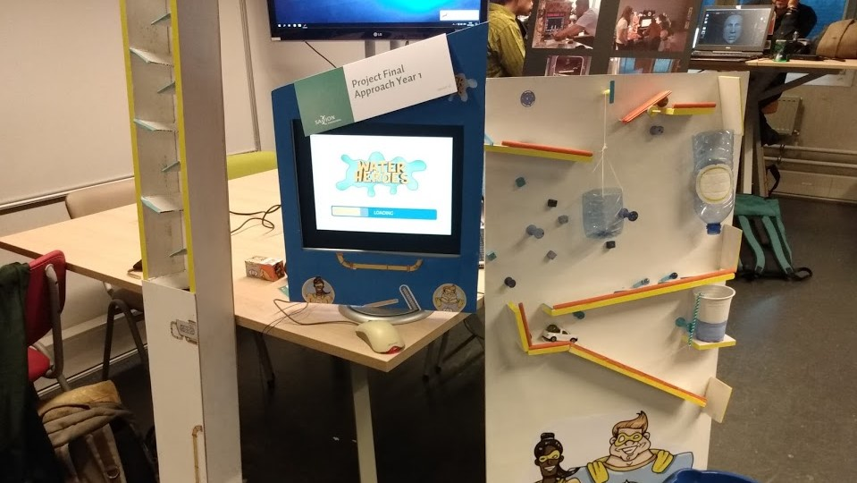
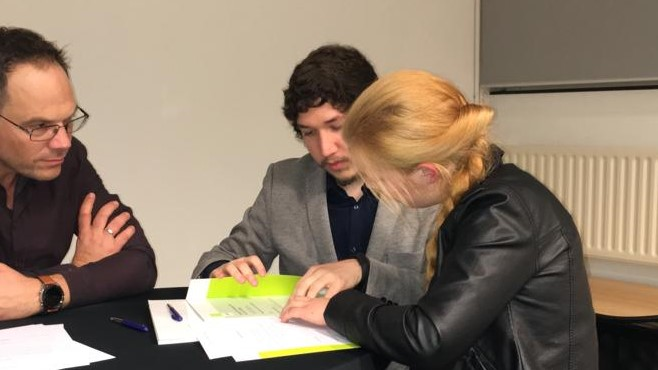
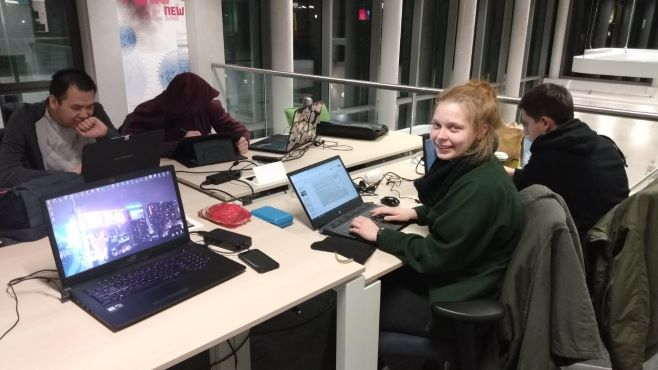
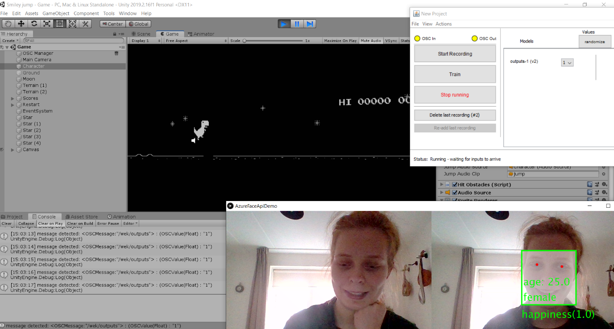
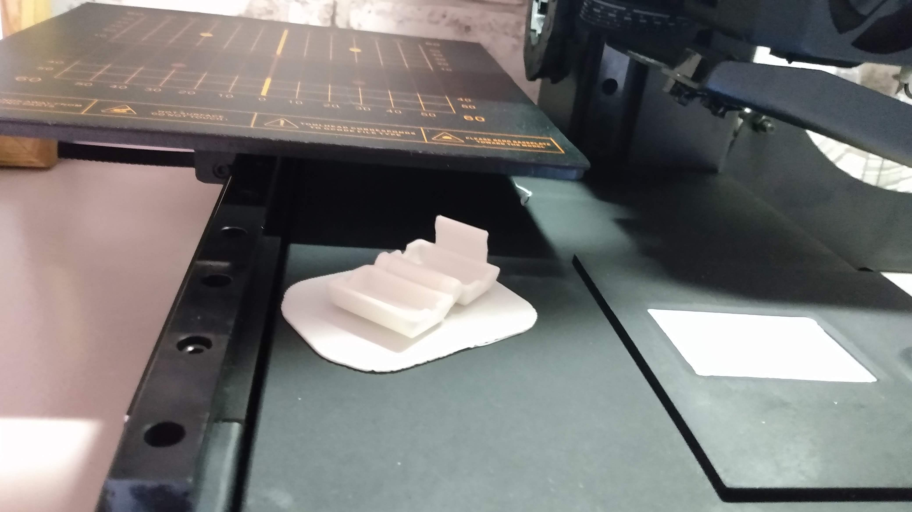

11-10-2019 open dag!
Vanavond heb ik geholpen op de open dag van mijn school. Ik was door een docent uitgenodigd om een project uit het eerste jaar (Waterheroes) te presenteren. Ik vond het erg leuk om potentiële studenten te verwelkomen en studenten van andere jaren te ontmoeten.
29-10-2019 propedeuse
Vanavond was geweldig. Ik heb mijn (tweede) propedeuse behaald! Het was 's avonds en ik mocht 3 mensen meenemen dus ik vroeg mijn ouders en zusje om te komen. Bij aankomst werden we ontvangen met koffie en cake en daarna werden we individueel naar de voorkant van de zaal geroepen om onze papieren te ondertekenen en een korte toespraak te houden. Afgelopen jaar was geweldig en ik hoop door te gaan met deze geweldige studie!
5-12-2019 Projecttijd!
Teamproject december Ik werk momenteel aan een teamproject. We maken een spel dat de verschillende CMGT-rollen uitlegt aan de bezoekers van de open dag. Het team is geweldig en ik hoop op een goed cijfer!
7-1-2020 Prototyping
Tijdens het vak prototyping leer ik hoe ik met eenvoudige middelen complexe systemen kan testen. Vandaag heb ik geleerd hoe ik mijn telefoon kan laten communiceren met een Unity-project op mijn laptop. Als de gebruiker glimlacht, wordt het gedetecteerd via de AzureFaceAPI en dat verzend en analyseert de gegevens via Wekinator (een machine learning-programma). Wekinator gebruikt ook OSC om de gegevens naar Unity te sturen, waar het personage beweegt op basis van de gezichtsuitdrukking van de gebruiker.
6-3-2020 Go Kibi!
Voor het start-up project hadden we 3 weken de tijd om een succesvol concept op te bouwen om de aandacht te trekken van een dragons’ den vol succesvolle professionals uit het werkveld en raad eens? We hebben gewonnen!! Kibi is een app die je bonnetjes scant en ze veilig voor je opslaat. De app is ook in staat om je aankopen in categorieën te verdelen en ze te groeperen, zodat je je uitgavengedrag kunt volgen, het heeft ook de optie voor aangepaste categorieën. We hebben ook een desktopversie gemaakt voor ingewikkeldere geldzaken. Sinds we gewonnen hebben, zijn we van plan door te gaan met Kibi, hoewel we een bekwame engineer missen om een minimaal levensvatbaar product te maken.
1-5-2020 3D printer
Vandaag is mijn 3D printer binnengekomen en ik heb hem natuurlijk even uitgeprobeerd! Gelukkig was de printer al gemonteerd en gekalibreerd, daardoor kon ik hem meteen gebruiken. Ik heb een bakje geprint dat stof en onregelmatigheden van het filament kan verwijderen voordat het de printer ingaat om verstoppingen te voorkomen.
5-6-2020 Eerste eigen print
Het is me gelukt om mijn eerste zelfgemaakte 3D model te printen. Het is een simpel winkelwagen muntje, maar ik hoop dat ik met een beetje oefenen in Fusion 360 straks complexere designs kan maken en printen!